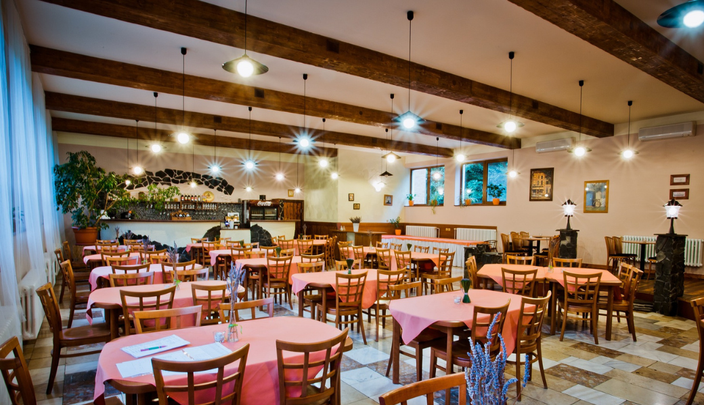
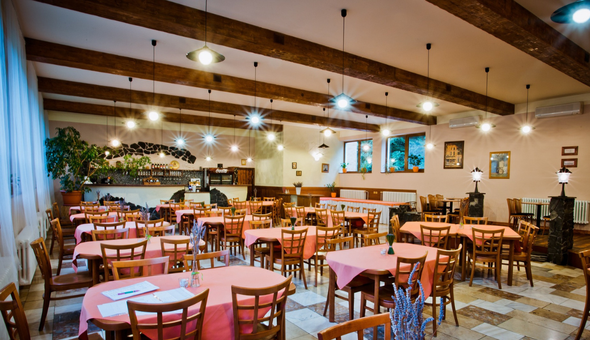

Nossa História
Inaugurado na década de 1970, o "Restaurante Eduardo" começou sua trajetória como um pequeno e acolhedor estabelecimento especializado em grelhados. Fundado por Eduardo Silva, o restaurante logo conquistou a preferência dos moradores locais e se tornou um ponto de encontro para famílias e amigos, oferecendo pratos deliciosos preparados com ingredientes frescos e selecionados.
Ao longo das décadas, o Restaurante Eduardo passou por várias transformações, sempre mantendo o compromisso com a qualidade e o sabor que marcaram sua história. Em 2014, já na terceira geração da família Silva, o restaurante passou por uma grande reforma. As instalações foram ampliadas e modernizadas, trazendo um ambiente mais confortável e aconchegante para seus clientes.
Além das melhorias no espaço físico, a forma de atendimento também foi aprimorada, visando proporcionar uma experiência gastronômica ainda mais agradável e personalizada. Com a modernização, o restaurante também passou a adotar novas tecnologias e processos que garantem a eficiência no atendimento e a satisfação dos clientes.
Para marcar essa nova fase, o restaurante foi rebatizado como "Restaurante Família Silva", em homenagem às gerações que mantiveram viva a tradição de excelência e dedicação. Hoje, o Restaurante Família Silva continua a ser referência em grelhados, mas também ampliou seu cardápio para incluir uma variedade de pratos que agradam a todos os paladares, sempre com o mesmo cuidado e atenção aos detalhes que são nossa marca registrada.
Venha nos visitar e faça parte da nossa história!
Escreva a história de um restaurante, para ser cocado em um site de divulgação: Inaugurado na década de 1970 com o nome de "Restaurante Eduardo" onde sua especialidade era gralhados, Em 2014, na terceira geração, ampliou suas instalações, e modernizou a forma de atendimento passando o nome para "Eduardu's Gastrobar", e ainda com especialidade em grelhados.
ChatGPT
Nossa História
Inaugurado na década de 1970, o "Restaurante Eduardo" começou como um pequeno e acolhedor estabelecimento especializado em grelhados. Fundado por Eduardo Silva, o restaurante logo conquistou a preferência dos moradores locais, tornando-se um ponto de encontro para famílias e amigos, com pratos deliciosos preparados com ingredientes frescos e selecionados.
Ao longo das décadas, o Restaurante Eduardo manteve seu compromisso com a qualidade e o sabor, passando por várias gerações da família Silva. Em 2014, já na terceira geração, o restaurante passou por uma grande transformação. As instalações foram ampliadas e modernizadas, trazendo um ambiente mais confortável e aconchegante para seus clientes.
Além das melhorias no espaço físico, a forma de atendimento também foi aprimorada para proporcionar uma experiência gastronômica ainda mais agradável e personalizada. Com essa modernização, o restaurante adotou novas tecnologias e processos que garantem a eficiência no atendimento e a satisfação dos clientes.
Para marcar essa nova fase, o restaurante foi rebatizado como "Eduardu's Gastrobar", uma combinação da tradição com a modernidade. Apesar das mudanças, nossa especialidade em grelhados continua sendo o carro-chefe do cardápio, agora acompanhado de uma variedade de pratos e bebidas que agradam a todos os paladares.
O Eduardu's Gastrobar é hoje um lugar onde a tradição se encontra com a inovação, oferecendo uma experiência única e memorável para todos os nossos clientes. Venha nos visitar e faça parte da nossa história!
Missão, visão e Valores
Missão
Proporcionar uma experiência gastronômica única e memorável, combinando a tradição dos nossos grelhados com inovações culinárias, em um ambiente acolhedor e moderno, sempre com um atendimento de excelência.
Visão
Ser reconhecido como um dos melhores gastrobares da região, destacando-se pela qualidade dos nossos pratos, pela inovação constante e pelo compromisso com a satisfação dos nossos clientes, mantendo viva a tradição familiar.
Valores
Qualidade:
Utilizamos ingredientes frescos e selecionados, garantindo pratos saborosos e de alta qualidade.
Tradição:
Honramos nossas raízes e a história do restaurante, mantendo viva a essência que nos trouxe até aqui.
Inovação:
Buscamos constantemente novas tendências e técnicas para aprimorar nossa culinária e atendimento.
Excelência no Atendimento:
Oferecemos um serviço personalizado e atencioso, visando sempre a satisfação dos nossos clientes.
Compromisso com a Comunidade:
Valorizamos a relação com a comunidade local, promovendo um ambiente inclusivo e acolhedor.
Sustentabilidade:
Adotamos práticas que respeitam o meio ambiente e promovem a sustentabilidade em todas as nossas operações
Instalaçõeas
Ambiente Moderno e Aconchegante
No Eduardu's Gastrobar, acreditamos que uma experiência gastronômica de excelência vai além dos pratos servidos, ela começa no momento em que você entra no nosso restaurante. É por isso que dedicamos uma atenção especial ao nosso ambiente, criando um espaço que combina modernidade e aconchego de maneira harmoniosa.
Nosso ambiente moderno reflete um design contemporâneo, com linhas clean e elegantes, utilizando materiais de alta qualidade que conferem sofisticação e estilo ao espaço. A iluminação cuidadosamente planejada cria uma atmosfera acolhedora, destacando cada detalhe do nosso décor. As mesas são dispostas de forma a proporcionar conforto e privacidade, permitindo que você aproveite sua refeição em um espaço tranquilo e agradável.
Para garantir um ambiente verdadeiramente aconchegante, adicionamos toques que remetem à nossa história e tradição. Elementos de madeira, plantas naturais e uma paleta de cores quentes ajudam a criar uma sensação de conforto e bem-estar, convidando você a relaxar e desfrutar de cada momento. Nosso espaço é pensado para ser inclusivo e acolhedor, perfeito para encontros familiares, jantares românticos ou celebrações com amigos.
Além disso, temos áreas específicas para diferentes ocasiões, incluindo um bar moderno e bem equipado, onde você pode experimentar nossas bebidas exclusivas enquanto aguarda sua mesa, e um lounge confortável para momentos de descontração.
No Eduardu's Gastrobar, cada detalhe do nosso ambiente é cuidadosamente planejado para proporcionar a você uma experiência completa, onde a modernidade encontra o aconchego, tornando cada visita única e especial. Venha nos visitar e sinta-se em casa!
Especialidades
No Eduardu's Gastrobar, nossa paixão por grelhados é o coração do nosso cardápio, mas nossas especialidades vão muito além disso, oferecendo uma variedade de pratos que agradam a todos os paladares.
Grelhados
Desde a nossa fundação na década de 1970 como "Restaurante Eduardo", a especialidade em grelhados sempre foi a nossa marca registrada. Utilizamos técnicas tradicionais combinadas com toques modernos para preparar cortes de carne suculentos, peixes frescos e vegetais saborosos, tudo grelhado à perfeição. Nossos grelhados são marinados com especiarias e temperos exclusivos, garantindo um sabor inigualável que faz cada mordida ser memorável.
Pratos Contemporâneos
Além dos grelhados, oferecemos uma seleção de pratos contemporâneos que refletem nossa busca constante por inovação culinária. Nossos chefs criam receitas inspiradas em tendências globais, utilizando ingredientes frescos e de alta qualidade. Desde massas artesanais até saladas gourmet e pratos vegetarianos, cada item do nosso menu é preparado com cuidado e criatividade.
Petiscos e Entradas
Para aqueles que desejam algo mais leve ou para compartilhar, nosso menu de petiscos e entradas é irresistível. Oferecemos opções variadas, desde clássicos como bruschettas e bolinhos de bacalhau, até criações exclusivas como nossos espetinhos gourmet e tábuas de frios finamente selecionados. Cada petisco é pensado para harmonizar perfeitamente com nossas bebidas e proporcionar uma experiência saborosa desde o início.
Bebidas Exclusivas
Nossa carta de bebidas é um capítulo à parte. No bar do Eduardu's Gastrobar, você encontrará uma seleção exclusiva de coquetéis artesanais, vinhos selecionados e cervejas especiais. Nossos mixologistas estão sempre prontos para surpreender com drinks inovadores, preparados com ingredientes frescos e técnicas refinadas. Além disso, oferecemos sucos naturais e bebidas não alcoólicas para todos os gostos.
Sobremesas
E para finalizar sua refeição de maneira perfeita, nossas sobremesas são um verdadeiro deleite. Desde clássicos como o pudim de leite até criações originais como nosso mousse de chocolate com toque de especiarias, cada sobremesa é feita com amor e atenção aos detalhes, proporcionando um final doce e inesquecível para sua experiência no Eduardu's Gastrobar.
Venha descobrir as nossas especialidades e deixe-se surpreender pelos sabores únicos e pela qualidade que só o Eduardu's Gastrobar pode oferecer. Estamos ansiosos para recebê-lo!
Horário de Funcionamentos
No Eduardu's Gastrobar, estamos comprometidos em proporcionar a melhor experiência gastronômica para você a qualquer momento. Nosso horário de atendimento foi cuidadosamente planejado para atender suas necessidades, seja para um almoço tranquilo, um jantar especial ou uma noite de celebração com amigos.
Segunda a Sexta-feira:
Almoço: 11:30h às 14:30h
Jantar: 18:30h às 22:30h
Sábado:
Almoço: 12:00h às 15:00h
Jantar: 18:00h às 23:00h
Domingo:
Almoço: 12:00h às 15:00h
Jantar: 18:00h às 21:00h
Happy Hour
De segunda a sexta-feira, das 17:00h às 21:00h, oferecemos um Happy Hour especial com preços promocionais em bebidas e petiscos. É o momento perfeito para relaxar após um dia de trabalho, encontrar-se com amigos e desfrutar do nosso ambiente acolhedor e moderno.
Reservas
Para garantir sua mesa, especialmente em horários de pico e finais de semana, recomendamos fazer uma reserva com antecedência. Você pode fazer sua reserva diretamente pelo nosso site, por telefone ou pessoalmente.
Eventos Especiais
Estamos disponíveis para eventos especiais e celebrações privadas fora do nosso horário regular de atendimento. Entre em contato conosco para mais informações sobre como podemos ajudar a tornar sua ocasião especial ainda mais memorável.
Esperamos sua visita em breve! No Eduardu's Gastrobar, estamos sempre prontos para recebê-lo com um sorriso e oferecer uma experiência gastronômica inesquecível.


 
